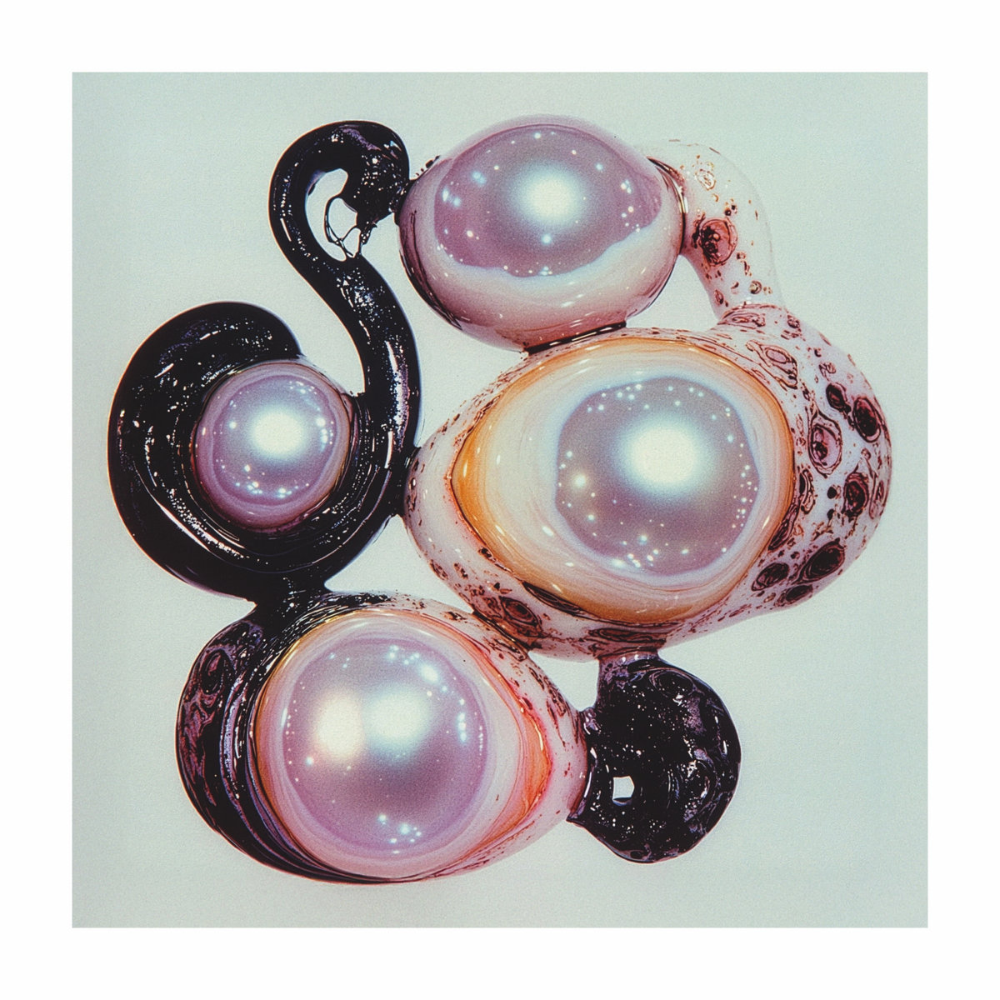

/works/In Vago Spirito
musician, sound engineer and audio programmer based in Bologna (IT).
Working between music producing, live sound engineering and technologies.
|

|
In Vago Spirito
[KHS 051]
To wander means to relinquish the idea of a destination—moving through sound without immediately seeking a form, allowing chance encounters, shifts, and resonances to suggest the path. It is from this gesture that "In Vago Spirito" emerges, the new album by Italian vocalist, composer and sound artist Ludovica Manzo. The record marks a new chapter in Ludovica Manzo’s ongoing exploration into the dialogue between free improvisation and composition—a path previously charted through her work with the duo O-Janà and her solo project Serpentine.
Moving between contemporary vocal music, electroacoustic practice, and experimental electronics, the record inhabits a territory where voice is transformed into a living, malleable material—an active acoustic element in constant metamorphosis.
Each track in "In Vago Spirito" takes shape from vocal and acoustic improvisations developed over time, following a process designed to intervene as little as possible on the original source. Rather than building an abstract concept, Manzo observes sound as it surfaces, preserving the nature of its first appearance. The primary vocal lines are first takes, retained precisely for their lack of expectation... more
credits
released October 15, 2026
All music and lyrics by Ludovica Manzo.
Tūn by Ludovica Manzo and Ruggero Fornari.
Grains, Salìa, Inn’Aria, Tūn and Uku produced by Ludovica Manzo and Ruggero Fornari.
All other tracks produced by Ludovica Manzo.
Mixed and mastered by Andrea Trona.
Cover art by Blumquist.
Ludovica Manzo: vocals, electronics, synth, ukulele
Ruggero Fornari: guitars, electronics
Kohlhaas 2026 © all rights reserved
listen/buy
|
|